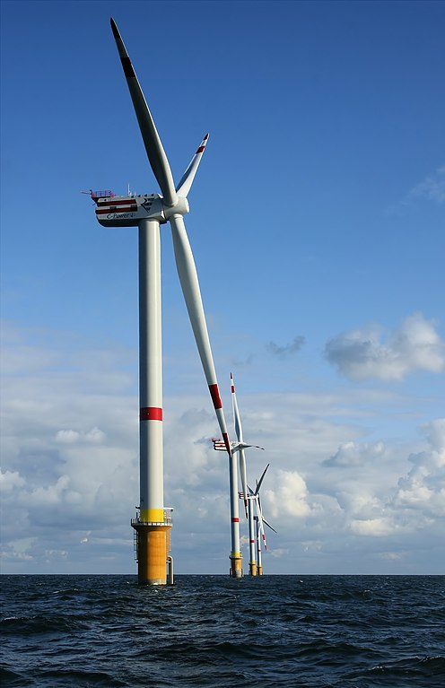

Energy¶
Energy is very important in our society because it allows us to meet daily basic needs, such as having light, cooking our food, heating our homes and transporting us to different places.
The excessive use of fossil energies (oil, natural gas and coal) is generating a climatic crisis that forces us to change our traditional energy sources for others less polluting and more sustainable, such as solar or wind energy.
We will begin studying the different forms or manifestations of energy and what are the primary energy sources we use, to end up studying in detail the electricity.
Content index:
Forms of energy¶
Energy is the ability to do work or produce changes.
There are many forms or manifestations of energy. Each has different characteristics, but all of them can become work or movement, light, heat, sound or other useful effects for us.
Next we will see the most common forms of energy and those that are usually used most.
- Potential energy
It is the energy that has an object due to its position in a gravitational field [1].
For example, an object that is in a high position has potential energy thanks to the seriousness of the earth. If we drop the object, that potential energy is transformed into kinetic energy, with which another object could drag and perform work.
Hydraulic dams accumulate potential energy in water when it is stored in a high position. When falling from the dam, the water transforms its potential energy into kinetic, which moves a turbine. Finally the turbine moves an alternator that produces electricity.

Aldeadávila arc dam dirtying due to a river flood.¶
Raiden32, CC BY-SA 4.0 International, via Wikimedia Commons.- Kinetic energy
It is the energy that has an object due to its movement.
For example, a ball thrown at high speed will have kinetic energy and can move other objects. Wind energy is the kinetic energy of the air in motion. When a car accelerates, the chemical energy of gasoline into kinetic energy is transformed. The moon has kinetic energy when moving around the earth. In the tides of the oceans we can see how the kinetic energy of the moon is transferred to the earth.
Warmers in Thornton Bank at 28km from the coast (OFF Shore), in the Belgian part of the North Sea.¶
Hans Hillewaert, CC BY-SA 4.0 International, via Wikimedia Commons.- Mechanical energy
It is the energy that is transmitted by linear displacement or turn of a mechanical piece of a machine.
For example, the axis of a blender transmits the mechanical energy of the engine to the blades. The connecting rod, which goes up and down, transmits mechanical energy from the piston to the crankshaft so that it rotates and moves the car.

Ringan Cardan Board, used to transmit energy.¶
Silberwolf, CC BY-SA 2.5 Generic, via Wikimedia Commons.- Thermal energy
It is a form of energy associated with temperature of an object. It is based on the internal movement of the atoms and molecules of the object. The higher the temperature of an object, the faster its particles move.
It is the most degraded and most difficult energy form to transform, especially if it is at low temperatures.
All energy transformations cause losses and gradually become thermal energy due to friction.
An example of thermal energy is the transformation that occurs in a heating boiler. The chemical energy of natural gas is transformed into high temperatures during combustion, which serves to heat buildings.
- Chemical energy
It is the energy found in the chemical bonds of fuels, food or batteries.
To release this energy it is necessary to cause chemical reactions, which in most cases consist of combining fuels with oxygen. That is what animals do when we convert fat and food carbohydrates in motion and heat to stay alive. Fossil fuels are substances that produce energy when combined with air oxygen. For example, the thermal energy occurs when burning coal or gasoline.
We also find this type of chemical energy in rechargeable batteries and in those of a single use. In this case, oxygen does not intervene in reactions.
- Nuclear power
It is the internal energy of the atoms that is released in the fusion and fission nuclear reactions.
Examples of this energy are the energy of the sun, which is produced by the fusion of its hydrogen atoms, and the energy of a nuclear power plant, which fissures uranium atoms. The geothermal energy of the Earth also comes from the nuclear energy of the uranium that is inside.
José Cabrera nuclear power plant in Guadalajara.¶
Mr. Tickle, CC BY-SA 3.0 Unported, via Wikimedia Commons.- Radiant energy
It is the energy that is present in the light or in the radio.
It is fundamental, because it is most of the energy that reaches the earth thanks to the sun and that we can take advantage of with solar panels.
Kitchem microwave convert electrical energy into radio microwaves that heat food from food.
- Electrical energy
It is the energy associated with the movement of electrons through conductive cables. It is very easy to convert other types of energy into electrical energy and vice versa. For that reason, electricity is widely used to transport other forms of energy from one place to another.
For example, the mechanical energy of a wind turbine moving with the wind can be transported easily and almost instantaneously in the form of electrical energy to a house that is located hundreds of kilometers. This electrical energy can be transformed again into mechanical energy, for example, in the blender or in any other useful way.
The rays of storms and electric discharges that we experience when we take away a sweater are natural manifestations of electricity, but we cannot take advantage of them in a useful way.
A disadvantage of electrical energy is that cannot be easily stored, so it must be consumed at the time it is generated. In order to store electricity, it should be transformed into chemical energy by batteries or potential energy by reversible hydroelectric plants [2].

{kind=link}
{kind=link}
{kind=link}
{kind=link}
{kind=link}
Energy transformation¶
According to the first principle of thermodynamics, energy is not created or destroyed, only transforms one way to another.
In these processes, several intermediate steps are often needed to produce the desired energy form.
These are some examples of common conversions between energy forms:
- Potential water energy of a dam in electrical energy.
- The potential energy of the water of a dam. It is transformed into kinetic energy when water is dropped. Next, a turbine converts this kinetic energy into rotation of an axis. The axis turn moves an alternator, which converts the mechanical energy transmitted by the axis into electric power.
- Chemical energy of natural gas in electrical energy.
- The chemical energy of natural gas becomes thermal energy within the burner of a turbine, which in turn turns it into turning of the turbine. An alternator converts the mechanical energy of the rotating axis into Electric energy.
- Nuclear energy of uranium in electrical energy.
- The nuclear energy of the uranium becomes thermal energy within the nuclear reactor, which in turn becomes overheated water. A steam turbine converts the energy of the water vapor into mechanical energy of an axis, which an alternator turns into electric power.
- Chemical energy of gasoline in kinetic energy of a car.
- The chemical energy of gasoline becomes thermal energy within the combustion chamber, which increases gas pressure and moves a piston, producing mechanical energy. This mechanical energy is transmitted to the wheels, which turn and move the car, providing kinetic energy.
- Heat energy in cooking.
- The kinetic energy of the wind moves the blades of a wind turbine and produces mechanical rotation energy. which applies to an alternator to turn it into electrical energy. Electric power is transported to our houses where, when passing through the resistance of the hob, it becomes thermal energy to cook.
Energy sources¶
An energy source is a natural resource from which energy can be obtained. According to their availability, we can distinguish between renewable energy sources and non -renewable energy sources.
- Non-renewable energy sources
These energy sources are exhausted as we consume them because there are only limited reserves.
Most of these energy sources are based on the chemical energy that plants and animals captured from the sun millions of years ago.
An important problem that generates this type of energy sources is pollution, global warming and climatic crisis.
- Coal. It is the source of energy that produces greater environmental pollution and greenhouse gas emissions.
- Oil. It is the most used today for all types of uses, from transport to housing heating. It is also very polluting.
- Natural gas. It is the least polluting of the three types of fossil energy sources when it burns, but also emits greenhouse CO2. It is composed of methane and when it is lost in the atmosphere it produces a greenhouse effect much greater than that of CO2.
- Nuclear. This energy produces few greenhouse gases, but it does generate significant amounts of pollutant radioactive waste.
- Renewable Energy Sources
These energy sources are considered inexhaustible and, with appropriate techniques, they can be used without limit.
The problem of most renewable energies is that they are intermittent, so it is necessary to store energy surpluses to be able to use them later.
- Solar. It is radiant energy that comes from the nuclear fusion reactions that take place inside the sun.
- Wind. The wind energy comes from heating by the sun of the air masses in the atmosphere.
- Hydraulics. It comes from the potential energy of rivers accumulated in dams. It has the advantage that it can be easily stored.
- Geothermal *. It comes from the internal heat of the earth produced by the nuclear reactions inside. It has the advantage of always being available, although only the Earth can be used in some volcanic areas.
- Biomass. It is the chemical energy that we can obtain from trees or biological waste that can become biogas.
- Mareomotriz. It is the energy that can be extracted from sea water thanks to the movement produced by tides.
Electrical energy¶
Electric power is not a source of primary energy, but should be generated from other primary sources. The reason why electricity is generated is that it is a very easy energy to transport, easy to control and turn into other forms of energy efficiently.
{kind=link}
- Advantages of electricity
- It can be easily obtained from other forms of energy (mechanical, chemical, heat, radiant, etc.).
- It can be easily transported to great distances.
- Transport is efficient and consumes little energy.
- It can easily become other forms of energy.
- It can be controlled very simple.
- It is very clean and does not pollute in the place where it is used. Although it can cause contamination in the generation place.
- It is safer than other forms of energy.
- Disadvantages of electricity
- There is no primary source of electricity, it must be generated from other primary sources.
- Most of the electricity that is currently generated comes from non -renewable and polluting primary energies, such as fossil or nuclear energies.
- It cannot be easily stored. In the electricity network, the same amount of electricity must be generated at every moment as the one consumed.
- For transport, cables are needed, so it is difficult to use in maritime and aerial transport.
- It can be dangerous and cause fires and electrical discharges if the necessary caution measures are not taken.
Electric power calculations¶
The electrical energy formula is as follows:
The magnitudes and units being the following:
E = Energy in kilowatts-hour [kWh]
P = Power in kilowatts [kW]
t = Time in hours [h]
Clearing, we have the other forms of the electrical energy formula:


This formula allows us to perform calculations related to the electricity bill, which is one of the most important expenses for homes.
According to this formula, the energy we consume depends on the power of the device we connect and the time that the device is in operation.
Thus, the refrigerator is one of the appliances with less power, since it consumes around 150 watts. However, it is the appliance that consumes the most energy at home, approximately one third of the total, since it is in operation almost all day every day of the year.
The most powerful appliances are usually those that generate large amounts of heat. In this group are the electric oven, the hob, the hair dryer, the air heater, etc. The power of these appliances ranges between 1000 and 3000 watts, so they spend a lot of electricity even if they are a short time lit.
Exercises¶
- Air heater
What energy does an air heater of 2000 watts consume per month if it works for 5 hours a day?
We begin to collect the problem data:
P = 2000W = 2kW
t = 5h/day · 30days = 150h
We write the energy formula and replace the values:
E = P · t
E = 2kW · 150h = 300kWh
- Batteries
What power does a flashlight have knowing that its battery stores 4 watts-hara of electric power and that lasts 10 hours in operation?
We begin to collect the problem data:
E = 4Wh
t = 10h
We write the energy formula and replace the values:
P = E / t
P = 4Wh / 10h = 0.4W
- Electric car
An electric car has a 100 kilowatt-hour battery. How many hours do you need to load the complete battery at a load point of 25 kilowatts of power?
We begin to collect the problem data:
E = 100kWh
P = 25kW
We write the energy formula and replace the values:
t = E / P
t = 100kWh / 25kW = 4 hours
Questionnaires¶
Questionnaires about electrical energy.
- Questionnaire. Electric Power I.
- Questionnaire. Electricity II.
- Questionnaire. Calculations with electric power.
Notes
| [1] | There are also other forms of potential energy, such as electrical potential energy, which will not be developed in this unit. |
| [2] | A reversible hydroelectric plant <https://en.wikipedia.org/wiki/Pumped-storage_hydroelectricity> __ works as a giant battery. It absorbs electrical energy of the network to pump water from a lower reservoir to another located at a higher height. Thus, energy accumulates in the form of high water that can be re -converted into electricity when necessary. |